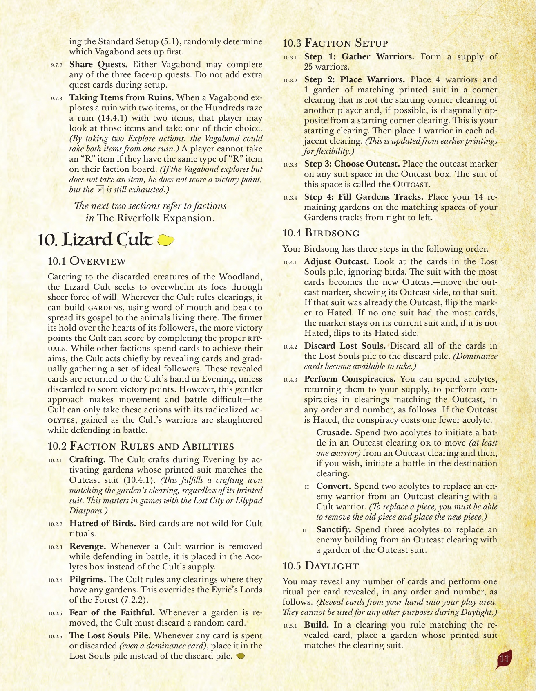
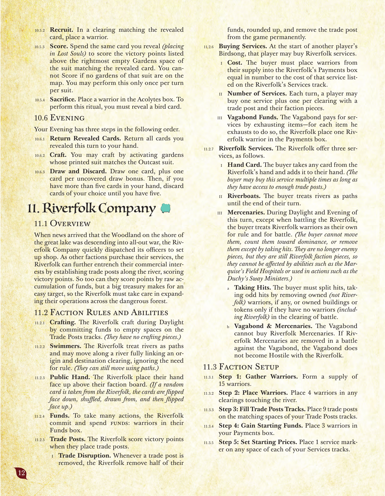

河の拡張：蜥蜴教団・河民商団
原題: The Riverfolk Expansion／『根の法典』第10〜11章。日本語版は「ルート 拡張 〜さざめく河のけだもの軍記〜」としてArclightGamesより発売されている。
10. 蜥蜴教団
10.1 概要
森で見捨てられた生き物たちを取り込みながら、蜥蜴教団は純粋な意志の力で敵を圧倒しようとする。教団が開拓地を支配する場所では、口伝と嘴伝いにその教えを広め、そこに住む動物たちへ「祭壇」を建てることができる。信徒の心への結びつきが強固になるほど、正しい儀式を完了することで教団はより多くの勝利点を得る。他の派閥がカードを消費して目的を達成するのに対し、教団はカードを公開し、徐々に理想的な信徒の集団を集めることで主に行動する。これらの公開されたカードは夕闇フェイズに教団の手札へ戻されるが、勝利点を得るために捨てられた場合は戻らない。しかし、この穏やかなやり方のために移動と戦闘は難しくなる――教団は、戦闘で防御中に兵士が殺されることで得られる「狂信信徒」によってのみ、これらのアクションを行うことができる。
10.2 派閥固有のルールと能力
- クラフト。 教団は夕闇フェイズ中、印刷されたスートが「疎外スート」（10.4.1）と一致する祭壇を発動することでクラフトする。（これは、祭壇に印刷されたスートにかかわらず、その祭壇のある開拓地に一致するクラフトアイコンを満たす。これは「失われた都市」や蓮葉流民が絡むゲームで重要になる。）
- 鳥への憎悪。 鳥カードは教団の儀式において万能ではない。
- 復讐。 教団の兵士が防御側として戦闘中に除去された場合、それは教団の補充箱の代わりに「狂信信徒」枠に置かれる。
- 巡礼者。 教団は、祭壇を1つでも持つすべての開拓地を支配する。これは鷲巣の「森の覇者」（7.2.2）を上書きする。
- 信徒の恐怖。 祭壇が除去されるたびに、教団はランダムなカードを1枚捨てなければならない。
- 迷い子の山。 いずれかのカードが消費または捨てられた場合（支配カードも含む）、それは捨て札置き場の代わりに「迷い子の山」に置かれる。
10.3 派閥固有の準備手順
- ステップ1：兵士の準備。 兵士25個の供給を用意する。
- ステップ2：兵士の配置。 他のプレイヤーの開始隅開拓地ではなく、可能であれば他のプレイヤーの開始隅開拓地と対角になる隅の開拓地に、兵士4体と、印刷されたスートが一致する祭壇1つを置く。これが自分の開始開拓地となる。その後、隣接する各開拓地に兵士を1体ずつ置く。
- ステップ3：疎外スートの選択。 「疎外」枠の任意のスートの枠に疎外マーカーを置く。この枠のスートを「疎外スート」と呼ぶ。
- ステップ4：祭壇トラックの充填。 残りの祭壇14個を、祭壇トラックの右から左に向かって対応する枠に配置する。
10.4 鳥歌フェイズ
鳥歌フェイズには、以下の順で3つのステップがある。
- 疎外スートの調整。 迷い子の山にあるカードを確認する（鳥は無視する）。最も枚数の多いスートが新しい疎外スートとなる――疎外マーカーをその疎外面が見えるようにそのスートへ移す。そのスートが既に疎外スートだった場合は、マーカーを「憎悪」面に裏返す。どのスートも最多でなかった場合、マーカーは現在のスートのままとし、「憎悪」状態でなければ「憎悪」面に裏返す。
- 迷い子の捨て。 迷い子の山にあるすべてのカードを捨て札置き場に捨てる。（支配カードは取得可能になる。）
- 陰謀の実行。 狂信信徒を補充箱に戻すことで消費し、疎外スートに一致する開拓地で「陰謀」を任意の順序・任意の回数で実行できる。疎外スートが「憎悪」状態の場合、陰謀のコストは1少なくなる。
- 十字軍。 狂信信徒2体を消費して、疎外開拓地で戦闘を開始するか、疎外開拓地から移動（兵士を少なくとも1体）し、望むなら移動先の開拓地で戦闘を開始する。
- 改宗。 狂信信徒2体を消費して、疎外開拓地の敵の兵士を教団の兵士に置き換える。（駒を置き換えるには、古い駒を除去でき、かつ新しい駒を配置できなければならない。）
- 聖別。 狂信信徒3体を消費して、疎外開拓地の敵の建物を、疎外スートの祭壇に置き換える。
10.5 昼光フェイズ
任意の数のカードを公開し、公開したカード1枚につき1回の「儀式」を任意の順序・任意の回数で行うことができる。（手札からプレイエリアへカードを公開する。これらは昼光フェイズ中、他の用途には使用できない。）
- 建設。 自分が支配する、公開したカードに一致する開拓地に、開拓地のスートと印刷されたスートが一致する祭壇を置く。
- 徴募。 公開したカードに一致する開拓地に兵士を置く。
- 得点。 公開したのと同じカードを消費して（迷い子の山に置く）、公開したカードに一致するスートの祭壇トラックの右端の空いている枠の上に記載された勝利点を獲得する。そのスートの祭壇が地図上に1つもない場合、得点を行うことはできない。このアクションは1ターンに1スートにつき1回しか行えない。
- 供犠。 「狂信信徒」枠に兵士を1体置く。この儀式を行うには鳥カードを公開しなければならない。
10.6 夕闇フェイズ
夕闇フェイズには、以下の順で3つのステップがある。
- 公開したカードを戻す。 このターンに公開したすべてのカードを手札に戻す。
- クラフト。 疎外スートに印刷されたスートが一致する祭壇を発動して、クラフトしてよい。
- カードを引いて捨てる。 カードを1枚引き、さらに露出した引き札ボーナスにつき1枚引く。その後、手札が5枚を超えている場合は、5枚になるまで好きなカードを捨てる。

原書 p.11
11. 河民商団
11.1 概要
大きな湖のほとりの森が全面戦争へ突き進んでいるという報せが届くと、河民商団は素早く自分たちの士官を派遣し、店を構えた。他の派閥がそのサービスを購入するにつれて、河民商団は河沿いに商館を設立することで自らの商業的権益をさらに強固にし、勝利点を得る。資金を単純に蓄積することでも得点できるが、大きな財庫は狙われやすい標的となるため、河民商団は危険な森の中で事業を拡大する際に注意を払わなければならない。
11.2 派閥固有のルールと能力
- クラフト。 河民商団は昼光フェイズ中、商館トラックの空いている枠に資金を投入することでクラフトする。（クラフト駒は持たない。）
- 泳ぎ手。 河民商団は河を道として扱い、出発地と目的地の開拓地を完全につなぐ河に沿って移動できる。この際、支配の必要性を無視する。（道を使った移動も引き続き可能である。）
- 公開された手札。 河民商団は自分の派閥ボードの上に手札を表向きで置く。（河民商団からランダムにカードを取る場合、それらのカードは裏向きにしてシャッフルし、そこから引いた後、再び表向きにする。）
- 資金。 多くのアクションを行うために、河民商団は資金（「資金」枠にある兵士）を投入・消費する。
- 商館。 河民商団は商館を配置するときに勝利点を得る。
- 貿易の混乱。 商館が除去されるたびに、河民商団は自分の資金の半分（小数点以上に切り上げ）を除去し、その商館をゲームから永久に除去する。
- サービスの購入。 他のプレイヤーの鳥歌フェイズの開始時に、そのプレイヤーは河民商団のサービスを購入してよい。
- コスト。 購入者は、河民商団のサービストラックに記載されたそのサービスのコストに等しい数の兵士を、自分の供給庫から河民商団の「支払い」枠へ置かなければならない。
- サービスの回数。 各ターン、プレイヤーはサービスを1回、さらに自分の派閥駒のある商館がある開拓地1つにつき1回購入できる。
- 放浪部族の資金。 放浪部族はアイテムを消耗させることでサービスの代金を支払う――消耗させたアイテム1つにつき、河民商団は河民商団の兵士1体を「支払い」枠に置く。
- 河民商団のサービス。 河民商団は以下の3つのサービスを提供する。
- カードの受領。 購入者は河民商団の手札から任意のカードを1枚取り、自分の手札に加える。（十分な商館へのアクセスがある限り、購入者はこのサービスを複数回購入してよい。）
- 川船。 購入者は自分のターンが終わるまで、河を道として扱う。
- 傭兵。 このターンの昼光フェイズと夕闇フェイズの間、河民商団と戦闘する場合を除き、購入者は河民商団の兵士を支配と戦闘において自分のものとして扱う。（購入者はそれらを移動させることはできず、支配カードのために数えることもできず、ヒットを受けることによる除去以外で除去することもできない。それらは購入者にとって敵駒ではなくなるが、依然として河民商団の派閥駒であるため、猫野侯国の「野戦病院」のような能力の対象にはならず、地底公領の「大臣の説得」のようなアクションで使うこともできない。）
- ヒットを受ける。 購入者は、自分の（河民商団以外の）所有する兵士を除去することで奇数のヒットを分配しなければならない。兵士がいない場合（河民商団を含めても）は、自分の所有する建物またはトークンのみで分配する。
- 放浪部族と傭兵。 放浪部族は河民商団の傭兵を購入できない。放浪部族に対する戦闘で河民商団の傭兵が除去された場合、放浪部族は河民商団に対して敵対状態にはならない。
11.3 派閥固有の準備手順
- ステップ1：兵士の準備。 兵士15個の供給を用意する。
- ステップ2：兵士の配置。 河に接する任意の開拓地に兵士4体を置く。
- ステップ3：商館トラックの充填。 商館トラックの対応する枠に商館9個を置く。
- ステップ4：開始資金の獲得。 「支払い」枠に兵士3体を置く。
- ステップ5：開始価格の設定。 各サービストラックの任意の枠にサービスマーカーを1つ置く。
11.4 鳥歌フェイズ
鳥歌フェイズには、以下の順で3つのステップがある。
- 保護主義。 「支払い」枠が空の場合、そこに兵士2体を置く。
- 配当の得点。 地図上に商館が1つでもある場合、資金2につき勝利点を1点得る。（「支払い」または「投入済み」枠の兵士は数えない。）
- 資金の回収。 自分の派閥ボード上のすべての兵士を「資金」枠に移す。
11.5 昼光フェイズ
以下のアクションを行うために資金を投入・消費できる。任意の順序・任意の回数で行ってよい。資金を投入するときは、その兵士を「投入済み」枠に移す。資金を消費するときは、その兵士を所有者の供給庫に戻す。
- 移動。 資金を1つ投入して、移動を1回行う。
- 戦闘。 資金を1つ投入して、戦闘を開始する。
- クラフト。 資金を投入して、手札のカードをクラフトする。これらの兵士を「投入済み」枠に移す代わりに、クラフトコストに記載されたスートに一致する商館トラックの空いている枠に置かなければならない。
- 輸出。 カードをクラフトした際の記載された利益を無視してそのカードを捨て、河民商団の兵士1体を「支払い」枠に置いてよい。
- 引く。 資金を1つ投入して、カードを1枚引く。
- 徴募。 資金を1つ消費して、河に接する任意の開拓地に兵士を1体置く。
- 駐留付き商館の設立。 資金2つを消費して、商館1つと兵士1体を配置する。
- 開拓地の選択。 商館がなく、いずれかのプレイヤーが支配している任意の開拓地を選ぶ。
- 資金の消費。 選んだ開拓地を支配するプレイヤーの資金を2つ消費する。
- 配置と得点。 選んだ開拓地に、対応する商館1つと兵士1体を配置する。自分の派閥ボード上で露出した枠に記載された勝利点を獲得する。
11.6 夕闇フェイズ
夕闇フェイズには、以下の順で2つのステップがある。
- カードを捨てる。 手札が5枚を超えている場合は、5枚になるまで好きなカードを捨てる。
- 価格の設定。 各サービスマーカーを、そのトラック上の任意の枠に動かして、新しい価格を設定してよい。
補足
以降の章は山の拡張（Underworld Expansion）に含まれる派閥を扱う。詳細は
山の拡張のページを参照。

原書 p.12